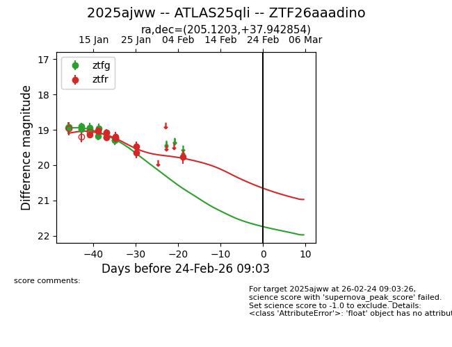
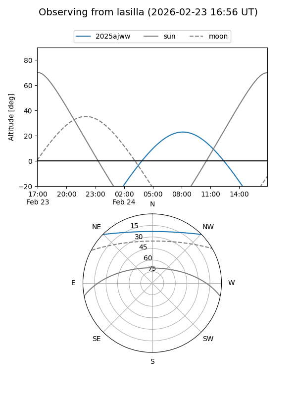
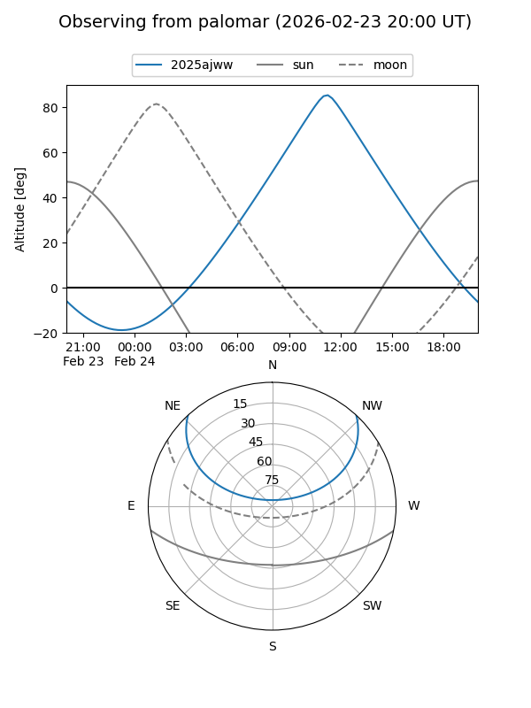
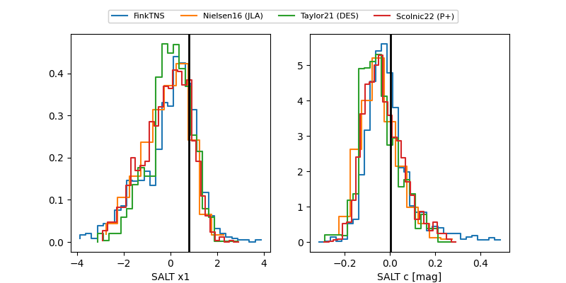

2025ajww
Target 2025ajww at 2026-01-25 11:01
Aliases and brokers:
FINK: link
Lasair: link
ALeRCE: link
TNS: link
YSE: link
alt names
ZTF26aaadino (ztf,fink_ztf)
2025ajww (tns,yse)
ATLAS25qli (atlas)
Coordinates:
equatorial (ra, dec) = 205.1203,+37.94285
equatorial (HMS+DMS) = 13:40:28.86,+37:56:34.27
galactic (l, b) = (82.3954,+75.06764)
Flags:
Photometry:
last ztfg=19.29, ztfr=19.65
11 ztfg, 8 ztfr detections
Lightcurve

Visibility


Additional plots
